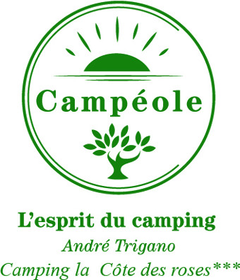
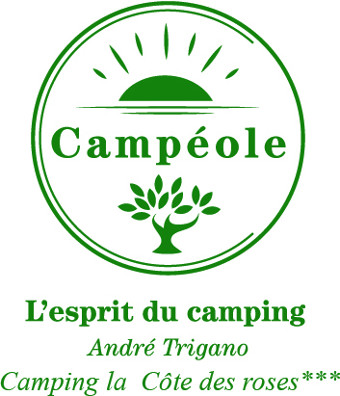

2ème Enigme
COURS MIRABEAU
Au Moyen-âge, Narbonne se confine derrière une muraille et commerce avec l’extérieur par ses quais, artère économique et vivante.
Question :
Grâce à l’intervention de Monseigneur DILLON, archevêque de Narbonne, les États de Languedoc décidèrent d’unir la Robine au canal du Midi par la création du canal de Jonction. Ce buste réalisé par Maurice Gril commémore le bicentenaire des travaux sous quel maire ?
Réponse:
exact
faux

 
